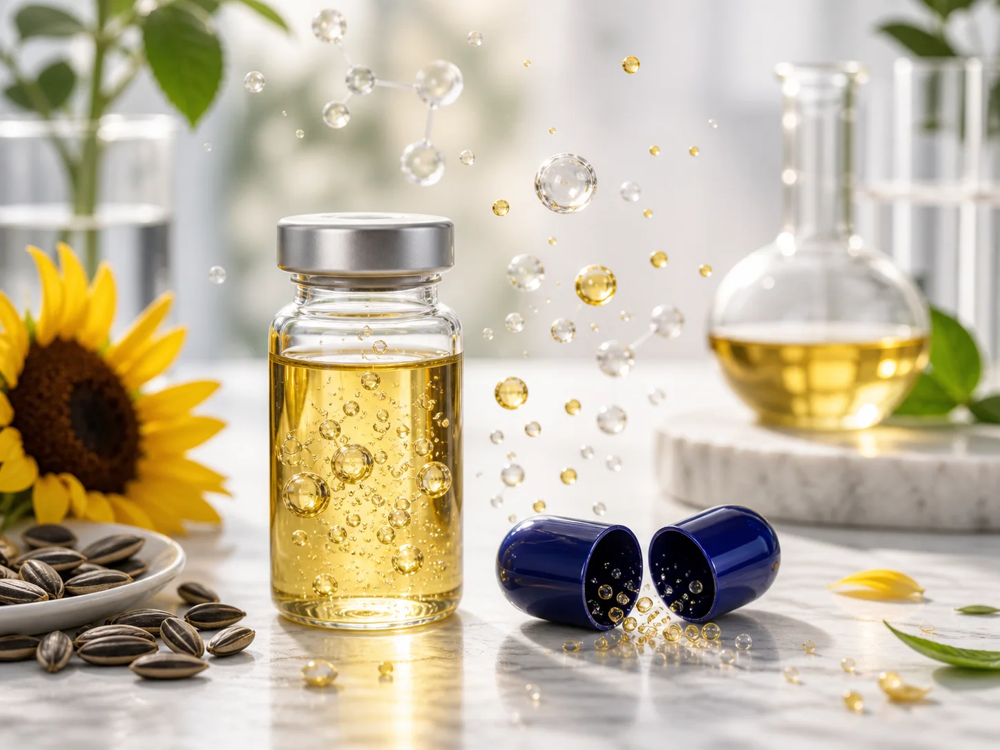

Ormesi
Uno stimolo lieve e controllato che aiuta a raccontare la logica degli ozonidi in modo accessibile.
BYO3 | Scienza italiana
OZOILAB® porta l'olio di girasole ozonizzato e stabilizzato in una forma pensata per la routine quotidiana. Non è ozonoterapia: è una tecnologia nutraceutica.

L'ozono è una molecola reattiva. La tecnologia OZOILAB lo lega all'olio di girasole, ottenendo ozonidi stabili da inserire in capsule per uso orale.
BYO3 comunica con prudenza: parla di supporto nutraceutico, non di terapia. Le formule sono pensate per accompagnare il benessere quotidiano.
Uno stimolo lieve e controllato che aiuta a raccontare la logica degli ozonidi in modo accessibile.
OZOILAB viene affiancato da attivi diversi in base al bisogno: energia, equilibrio, intestino o mobilità.
Il beneficio atteso appartiene alla costanza, tipicamente nelle settimane, non all'effetto immediato.